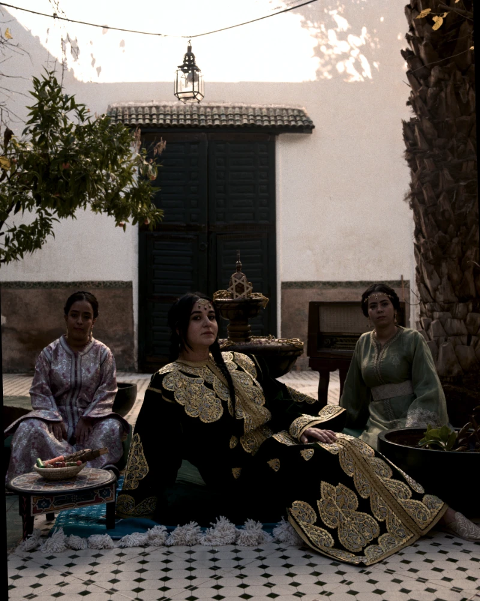

ARTIST STATEMENT
This body of work is born from a contradiction I carry within myself: I am an Arab, a Muslim, and a child of a region that taught me—often without words—that dignity is measured by opposition. These photographs are an attempt to unlearn that inheritance without denying it. They do not seek to absolve, accuse, or simplify. Instead, they linger in the unresolved space between memory and responsibility, between inherited anger and chosen conscience.
The images trace a century in which identity slowly drifted from creation toward negation. Walls, gestures, streets, faces, absences—each photograph stands as a quiet witness to how a people learned to define themselves not by what they build, but by what they resist. The camera here is not a weapon and not a flag. It is a listening device. It listens to exhaustion in the eyes of ordinary people, to the weight carried by landscapes repeatedly asked to symbolize causes far larger than themselves, and to the silence left behind when slogans fade but lives remain.
As a Moroccan Muslim Arab who believes in peace, I photograph neither heroes nor villains. I photograph consequences. A cracked wall speaks of ideology more honestly than a speech. A child’s posture reveals more about conflict than a thousand headlines. The work resists spectacle; it is intentionally restrained, because restraint is what has been missing from our political imagination. These images ask what happens to a society when struggle becomes identity, when hatred becomes heritage, and when the future is indefinitely postponed in the name of an eternal fight.
This collection is not an argument for forgetting, nor an invitation to surrender memory. It is a proposal for maturity. To look clearly is not to betray; it is to take responsibility. These photographs imagine an Arab identity that is no longer held hostage by destruction, an identity capable of grief without obsession, solidarity without mythology, and dignity without enemies. If there is hope here, it is not loud. It exists quietly, in the act of seeing, and in the courage it takes to see differently.